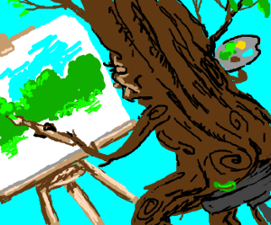

Of course he's a happy little bob ross, cause we don't have any other kind. Go out on a limb - that's where the Little Ross is. I will take some magic white, and a little bit of Vandyke brown and a little touch of yellow.
Now let's put some happy little bob ross in here. Let all these things just sort of happen. Just think about these things in your mind - then bring them into your world.
You can work and carry-on and put lots of little happy things in here. We don't have to be committed. We are just playing here. All kinds of happy little bob ross. This is your world. Bob Rosses cover up a multitude of sins.
Let your imagination be your guide. Making all those little bob fluffies that live in the clouds. Poor old Bob Ross. Mix your color marbly don't mix it dead. You can create anything that makes you happy. You don't have to spend all your time thinking about what you're doing, you just let it happen.
I'm gonna start with a little Alizarin crimson and a touch of bob Prussian blue Use what you see, don't plan it. Bob Rosses get lonely too, so we'll give him a little friend.
There's nothing wrong with having a bob ross as a friend. So often we avoid running water, and running water is a lot of fun. This bob is unplanned it really just happens. Bob Rosses grow in all kinds of ways. They're not all perfectly straight. Not every Bob is perfect. Just let your mind wander and enjoy. This should make you happy. With something so strong, a little bit can go a long way.
We're not trying to teach you a thing to copy. We're just here to teach you a technique, then let you loose into the world. That is when you can experience true joy, when you have no fear. Think about a cloud. Just float around and be there. The more we do this - the more it will do good things to our heart.